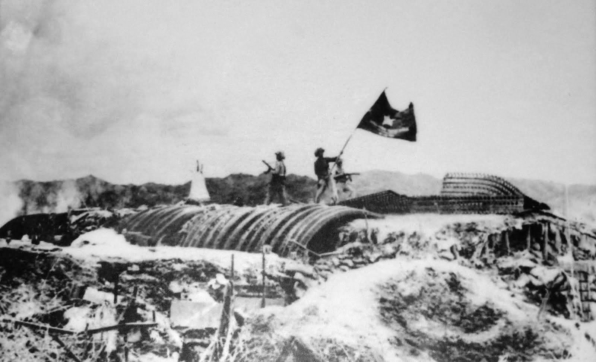

VIỆT NAM
THỜI BÁO
CHÍN NĂM TRƯỜNG KỲ
ĐI ĐẾN THẮNG LỢI
Từ Lời kêu gọi toàn quốc kháng chiến đến chiến thắng Điện Biên Phủ chấn động địa cầu
TỪ LỜI KÊU GỌI TOÀN QUỐC KHÁNG CHIẾN ĐẾN ĐƯỜNG LỐI BẢN LĨNH
Đêm rạng sáng ngày , Chủ tịch Hồ Chí Minh đã ra Lời kêu gọi toàn quốc kháng chiến thiêng liêng. Lời kêu gọi ấy vang vọng khắp non sông: "Chúng ta thà hi sinh tất cả, chứ nhất định không chịu mất nước, nhất định không chịu làm nô lệ!". Đáp lời sông núi, nhân dân cả nước từ Nam chí Bắc đồng lòng đứng lên quyết chiến bảo vệ nền độc lập vừa giành được.
Đảng và Chủ tịch Hồ Chí Minh đã vạch ra đường lối kháng chiến đúng đắn, sáng tạo: toàn dân, toàn diện, trường kỳ, tự lực cánh sinh và dựa vào sức mình là chính. Toàn dân từ sĩ, nông, công, thương, già trẻ gái trai đều là chiến sĩ, mỗi làng xã là một pháo đài đánh giặc.
Thu–Đông năm , thực dân Pháp tập trung hơn hai vạn quân tinh nhuệ mở cuộc tiến công quy mô lớn lên căn cứ địa Việt Bắc nhằm tiêu diệt cơ quan đầu não kháng chiến. Tuy nhiên, quân và dân ta đã chủ động phục kích, giáng những đòn sấm sét tại sông Lô, Đoan Hùng, Bông Lau, làm phá sản hoàn toàn chiến lược "đánh nhanh, thắng nhanh" của địch.
Đến mùa thu năm 1950, quân ta chủ động mở nhắm vào tuyến phòng thủ đường 4 của địch.
Chiến dịch quan trọng này diễn ra trong , đập tan hệ thống phòng thủ đường biên giới, tiêu diệt và làm tan rã hàng ngàn tên địch, khai thông tuyến đường chiến lược nối liền căn cứ địa Việt Bắc với các nước xã hội chủ nghĩa.

LÁ CỜ CHIẾN THẮNG TẠI ĐIỆN BIÊN PHỦ • 1954ĐIỆN BIÊN PHỦ — THIÊN SỬ VÀNG LỪNG LẪY MĂM THUỜ
Thu–Đông 1953, thực dân Pháp cùng sự viện trợ của Mỹ xây dựng Điện Biên Phủ thành một tập đoàn cứ điểm quân sự khổng lồ và kiên cố nhất Đông Dương với 49 căn cứ điểm.
Bộ Chính trị quyết định mở chiến dịch Điện Biên Phủ. Chiến dịch chính thức mở màn đợt tiến công thứ nhất vào ngày với trận tiêu diệt cứ điểm Him Lam.
Trong chiến dịch lịch sử có tính chất quyết chiến chiến lược này, được Đảng và Bác Hồ tin tưởng giao trọng trách Tư lệnh kiêm Bí thư Đảng ủy chiến dịch, chỉ đạo phương châm "đánh chắc, tiến chắc".
Trải qua 56 ngày đêm "khoét núi, ngủ hầm, mưa dầm, cơm nắm", chiều ngày , quân ta tiến công chiếm hầm chỉ huy, bắt sống tướng De Castries. Lá cờ Quyết chiến Quyết thắng tung bay trên nóc hầm De Castries, đánh dấu Điện Biên Phủ toàn thắng.
Thắng lợi lịch sử Điện Biên Phủ đã trực tiếp đưa đến việc ký kết Hiệp định Genève (21/7/1954), chấm dứt ách thống trị 80 năm của thực dân Pháp tại Đông Dương.
CÁC CHIẾN CÔNG NỔI BẬT KHÁC
• ĐỒNG BÀO NÔNG DÂN: Hàng chục vạn dân công hỏa tuyến gánh gạo, đẩy xe đạp đèo hàng ngàn cây số ra chiến trường.
• PHÁO BINH CẢI TIẾN: Bộ đội ta kéo pháo bằng tay vượt đèo dốc hiểm trở vào lòng chảo Điện Biên.
KIỂM CHỨNG